Eu abro este texto com a mesma energia com que subi ao palco em San Francisco: empolgado, prático e com a certeza de que estamos apenas no começo. Neste keynote que apresentei pela OpenAI, compartilhei anúncios, demos ao vivo e uma visão clara do que será mais fácil para vocês construírem com IA. Desde apps nativos dentro do ChatGPT até ferramentas que transformam como escrevemos software, eu quis mostrar caminhos concretos para tornar ideias em produtos úteis — e rápidos de lançar. Ao longo deste artigo eu vou detalhar cada anúncio, explicar as decisões que motivaram as escolhas de produto e oferecer lições práticas para desenvolvedores que queiram tirar vantagem hoje.
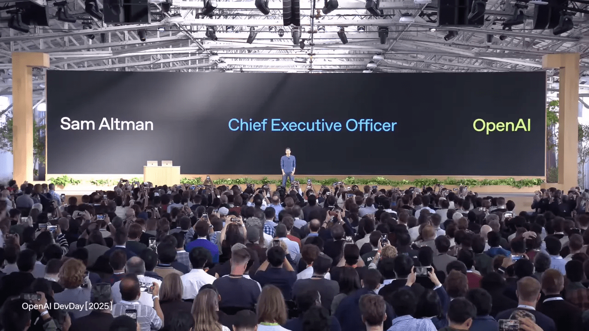
Pontos:
- 🚀 Por que este momento é único para construir com IA
- 🧩 Quatro focos principais do keynote
- 🧭 Apps dentro do ChatGPT: visão e detalhes
- 🧪 Demos ao vivo: Coursera, Canva e Zillow
- 🛠️ Agent Kit: construir agentes mais rápido
- 🧩 Agent Builder: um exemplo prático (Ask Froge)
- 🔍 Segurança, testes e confiança
- 🤖 Codex: a nova era da engenharia assistida
- 🎛️ Demo ao vivo do Codex: transformar o auditório em um playground
- 🆕 Recursos do Codex para equipes
- 🧠 Modelos: GPT-5 Pro, Real-Time Mini e Sora2
- 🎨 Creators e casos de uso humanos
- 📈 Acelerando do protótipo à produção
- 🔁 Como eu imagino o ecossistema nos próximos 12 meses
- 📚 FAQ — Perguntas frequentes
- ✨ Conclusão: minha chamada para os construtores
🚀 Por que este momento é único para construir com IA
Eu comecei o evento lembrando números que, para muitos, soariam impressionantes: em 2023 havia 2 milhões de desenvolvedores semanais e processávamos cerca de 300 milhões de tokens por minuto. Hoje esses números são muito maiores — 4 milhões de desenvolvedores e mais de 6 bilhões de tokens por minuto. Esses saltos não são méritos de uma única empresa; são a consequência de milhares de pessoas construindo, testando e escalando. Esse acelerador de uso transforma a IA de brinquedo para ferramenta de produção, e é isso que me deixa empolgado: a infraestrutura, o conhecimento e a demanda existem. Eu quero que você saiba que, se tiver uma boa ideia, agora é o momento de construí-la.
🧩 Quatro focos principais do keynote
No cerne do que eu apresentei estão quatro prioridades claras, cada uma pensada para reduzir atrito entre ideia e produto:
- Apps internos ao ChatGPT — facilitar criação e distribuição;
- Agent Kit — simplificar projeto, teste e deploy de agentes;
- Codex — transformar como escrevemos software em equipes;
- Modelos novos (GPT-5 Pro, Sora2, Real-Time Mini) — ampliar capacidades multimodais.
Minha intenção foi prática: não só anunciar recursos, mas mostrar como eles se encaixam num fluxo real de trabalho.
🧭 Apps dentro do ChatGPT: visão e detalhes
Quero que o ChatGPT seja um lugar onde as pessoas fazem coisas de verdade — seja aprender, criar, comprar ou executar tarefas. Para atingir isso, abri um novo capítulo: apps que rodam dentro do ChatGPT. Isso significa experiências interativas, com UI completa, que conversam diretamente com o modelo e acionam ações em serviços externos.
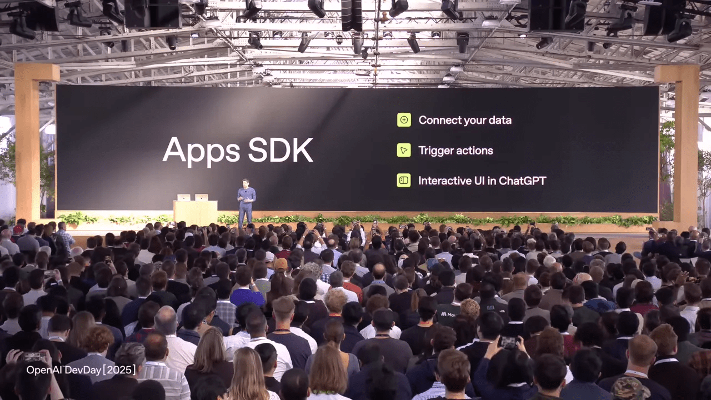
O que é o Apps SDK?
O Apps SDK é a pilha completa para você levar um produto ao ChatGPT. Ele inclui:
- Conexão de dados e autenticação;
- Ações e gatilhos (trigger actions) para executar operações;
- Renderização de UI que pode ser exibida inline, em picture-in-picture, ou em tela cheia;
- Compatibilidade com o padrão MCP para interoperabilidade.
Com o Apps SDK, você mantém controle total do backend e do frontend, mas ganha acesso direto a centenas de milhões de usuários do ChatGPT. Isso muda a equação de distribuição — uma ferramenta importante para startups e equipes pequenas que querem crescer rápido.
Descoberta e monetização
Apps dentro do ChatGPT serão encontráveis por busca, por recomendação contextual na conversa e por um diretório que será lançado posteriormente. Se um usuário já for assinante do seu produto, ele poderá fazer login diretamente na conversa. Planejamos também caminhos de monetização embutidos, incluindo o novo Agent Commerce Protocol que possibilita checkout instantâneo dentro da conversa.
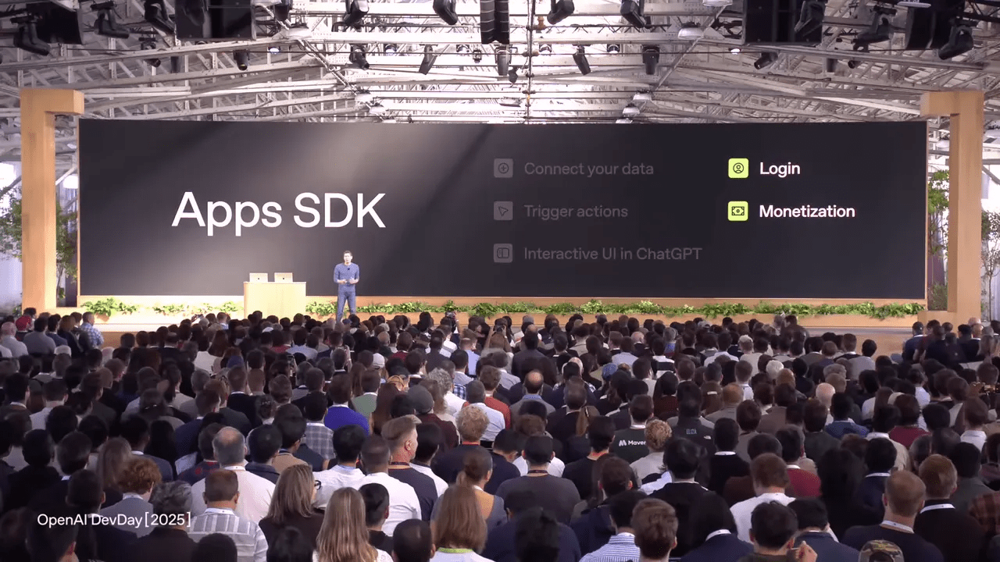
🧪 Demos ao vivo: Coursera, Canva e Zillow
Demonstrar em produção foi uma parte chave do keynote. Eu chamo isso de mostrar o “porquê” e o “como” juntos: Coursera para aprendizado integrado, Canva para criação visual direta na conversa, e Zillow para experiências reais de dados e ações. Cada demo ilustrou um aspecto do Apps SDK — context passing, renderização multimodal e capacidade de ação em sistemas externos.
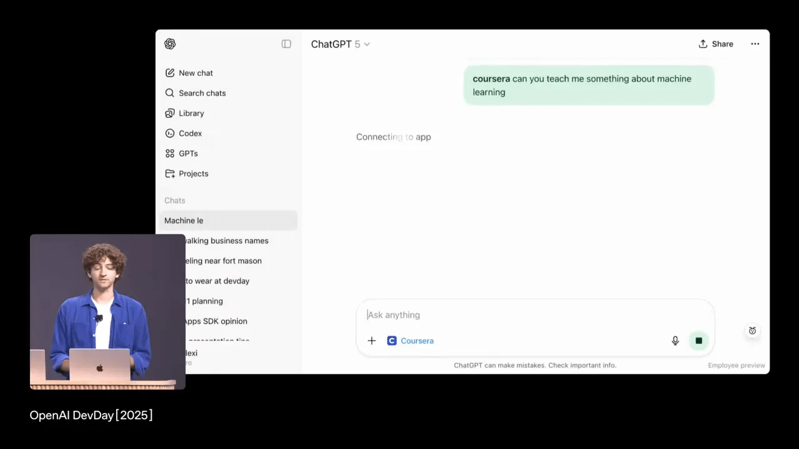
Coursera: aprendizado conversacional
No demo do Coursera, eu pedi que o app me ensinasse sobre machine learning, reproduzi um vídeo dentro da conversa e pedi explicações sobre partes específicas do vídeo. O Apps SDK permite que a aplicação exponha contexto de interação de volta para o modelo — chamamos isso de “talking to apps”. O resultado: o ChatGPT sabe exatamente qual fragmento você está vendo e pode gerar explicações precisas, passo a passo. Isso melhora a retenção do usuário e cria jornadas educativas muito mais ricas.
Canva: do brainstorm ao ativo visual
No caso do Canva, usei a conversa para transformar um nome e um tom criativo em vários posters. O app retornou assets inline; eu pedi para abrir um deles em tela cheia e depois convertê-lo em pitch deck. Essa integração direta reduz o ciclo do ideation à execução: sem trocar de aplicativo, você gera, edita e exporta conteúdos. Isso tem impacto enorme em fluxos de marketing e prototipagem rápida
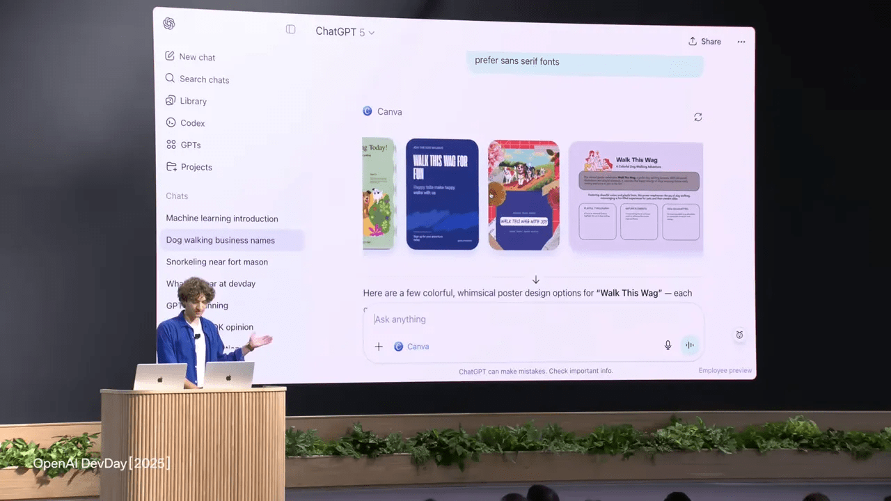
Zillow: dados em contexto e ações
A demo do Zillow mostrou um mapa interativo integrado na conversa. Eu pedi filtros — por quartos, por quintal — e o app atualizou os resultados dinamicamente. Como o app expõe o que o usuário está olhando, eu pude perguntar “quão perto fica esse imóvel de um parque para cachorros?” e o ChatGPT combinou contexto do Zillow com busca externa para responder. Essa composição de fontes e ferramentas é um dos grandes pontos fortes do ecossistema que estamos abrindo.
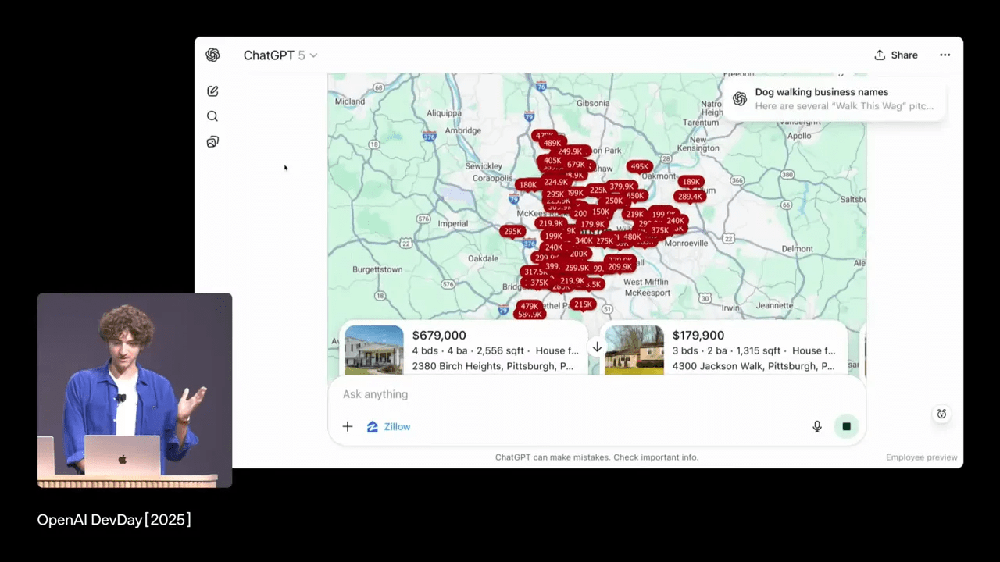
🛠️ Agent Kit: construir agentes mais rápido
Agentes são o passo além de sistemas que respondem perguntas: são sistemas que tomam ações, coordenam ferramentas, e operam com contexto e confiança. Apesar do entusiasmo, poucas organizações tinham conseguido levar agentes ao nível de produção por conta da complexidade. Eu quis resolver isso. Apresentei o Agent Kit: um conjunto de blocos para projetar, implantar e otimizar agentes com menos fricção.
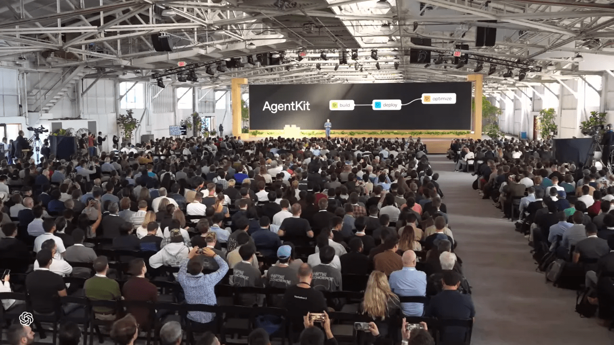
Componentes principais do Agent Kit
- Agent Builder — uma tela visual para modelar fluxos, conectar ferramentas e testar lógicas sem começar do zero em código;
- ChatKit — um componente de chat embutível, customizável, pronto para seu produto;
- Evals para agentes — rastreamento, grading por trace, datasets de testes, otimização de prompts e a possibilidade de rodar avaliações em modelos externos;
- Connector registry — painel administrativo para conectar com segurança sistemas internos e APIs externas.
Essas peças visam acelerar o ciclo de protótipo → produção: visual → teste → deploy → otimização. Para equipes que preferem codificar tudo, oferecemos export de código; para equipes que querem velocidade, o builder visual e o workflow ID permitem deploy imediato.
🧩 Agent Builder: um exemplo prático (Ask Froge)
Eu pedi à equipe que construísse algo simples e útil em poucos minutos: um agente que ajudasse os participantes do evento a encontrar sessões relevantes. Christina fez isso ao vivo em menos de oito minutos — montando um fluxo visual com um agente de categorização, um agente para sessões, outro para perguntas gerais, widgets visuais e guardrails para PII.
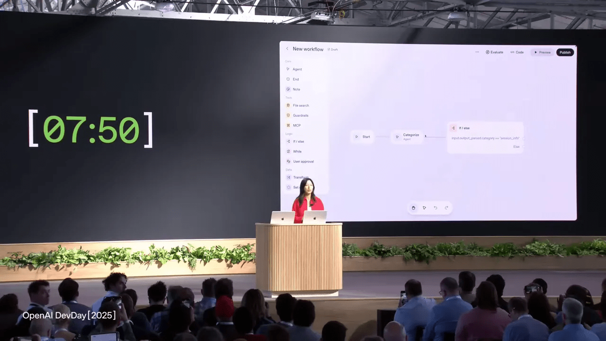
O que aprendi com a demo
Algumas lições práticas desta experiência:
- Modelagem visual reduz o custo inicial e facilita iteração com stakeholders não técnicos;
- Widgets predefinidos permitem experiências bonitas sem front-end extenso;
- Guardrails integrados aumentam a confiança para publicar agentes que acessam dados sensíveis;
- Export de código garante que você não fica preso a uma solução hospedada caso queira migrar.
No fim, o Ask Froge foi publicado com um workflow ID e conectado ao site do evento em minutos.
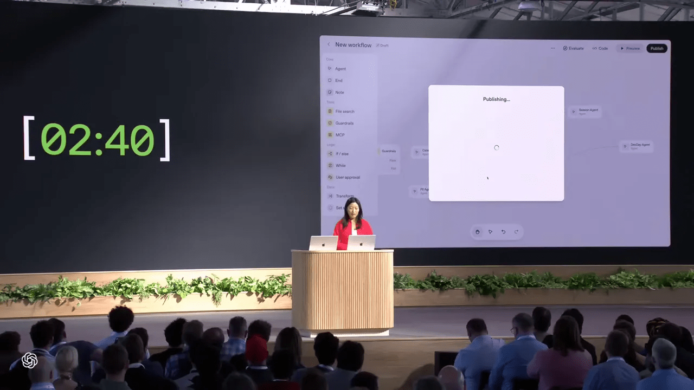
🔍 Segurança, testes e confiança
Agentes que executam ações exigem confiança. Por isso, incluímos guardrails que podem bloquear conteúdo, moderar e evitar vazamento de PII; ferramentas de avaliação (evals) que permitem grade por passo (trace grading) e datasets para testar nós individuais do agente; e automação para otimizar prompts com base em métricas reais. Esses são elementos que, na minha visão, são essenciais para mover agentes do laboratório para ambientes regulados e corporativos
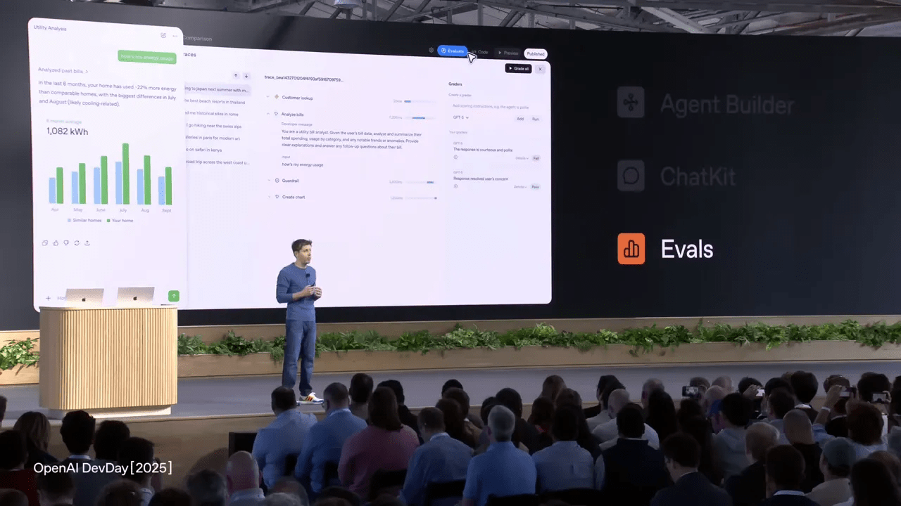
🤖 Codex: a nova era da engenharia assistida
Uma das partes que mais me entusiasma é ver como a Codex mudou a rotina dos engenheiros. Lançamos inicialmente como preview e agora estamos promovendo para GA — Codex deixou de ser um experimento para ser um colaborador presente em IDEs, terminais, GitHub e nuvem. Ele roda sobre o modelo GPT-5 Codex, otimizado para tarefas de engenharia como refatoração, revisão de código e planejamento de mudanças.
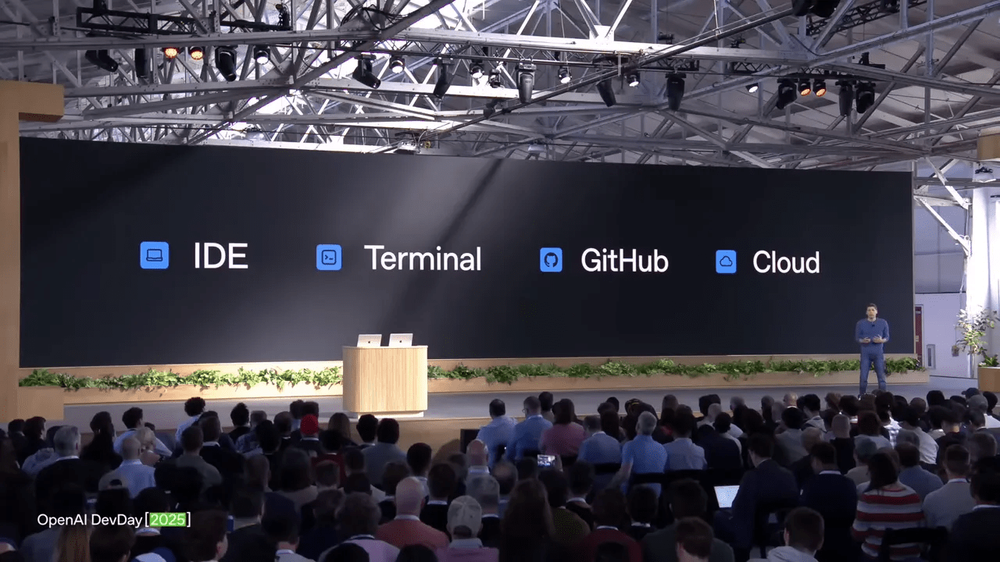
O que o Codex faz por equipes
- Acelera revisões de PR — métricas internas mostram aumento significativo de produtividade;
- Automatiza tarefas repetitivas, liberando engenheiros para decisões arquiteturais;
- Permite integração via SDK para automações e extensões internas;
- Oferece integração com Slack para consultas de código diretamente de conversas de equipe.
Exemplos concretos incluem empresas como Cisco, que relatou redução de 50% no tempo de revisão de código. Internamente, a adoção é profunda: muitos PRs já passam por revisão do Codex antes de serem mesclados.
🎛️ Demo ao vivo do Codex: transformar o auditório em um playground
Para mostrar o que Codex pode fazer, eu trouxe ao palco uma demonstração prática: transformar dispositivos reais (uma câmera no cenário, controladores, o sistema de luzes) em software controlável sem escrever uma linha de código manualmente. Ramon demonstrou como, com o Codex CLI e a integração ao VS Code, ele pediu para controlar uma câmera Sony FR7 via Node e o Codex gerou todo o servidor, pacotes UDP, headers e integrou a interface. Depois, conectou um controle Xbox, integrou voz via Real-Time API, e até acionou a iluminação do local via MCP.
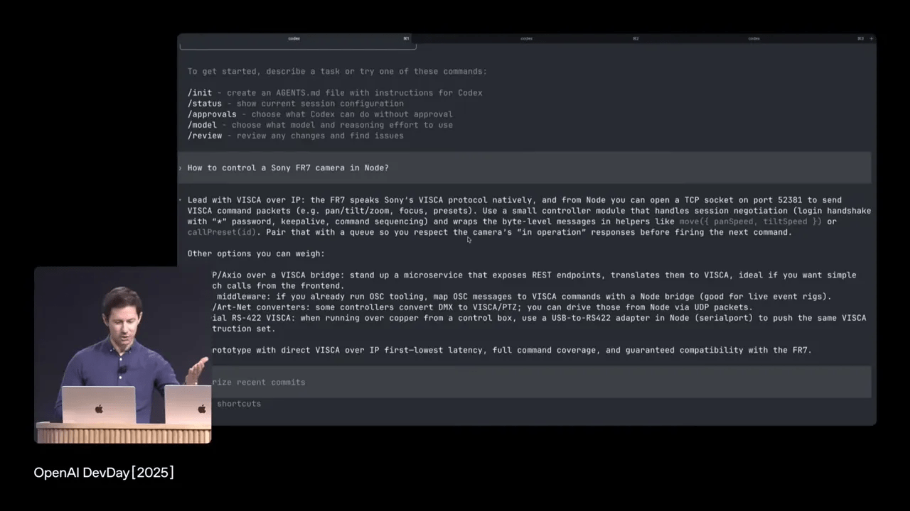
Por que isso importa
O demo mostrou três coisas cruciais:
- Contexto automático: o Codex entende o que já está no seu workspace e gera ou edita código com base nisso;
- Agentic behavior: ele pesquisa, chama ferramentas, ajusta planos e volta para completar a tarefa, como um colega de equipe;
- Hot reprogramming com Codex SDK: você pode reprogramar sua aplicação em tempo real como parte de um fluxo de usuário.
Ao final, houve voz, controle de câmera e luzes operando em sincronia — tudo gerado e orquestrado pelo Codex.
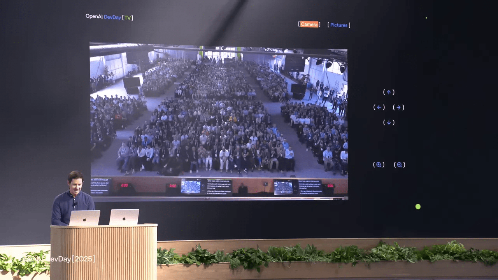
🆕 Recursos do Codex para equipes
Além da GA do Codex, lancei alguns recursos pensados para times:
- Integração com Slack — peça ao Codex para escrever snippets ou responder dúvidas dentro de canais;
- Codex SDK — extensão para automatizar fluxos e integrar com pipelines internos;
- Ferramentas administrativas — controles de ambiente, dashboards de uso e monitoramento para governança.
Esses elementos aproximam o Codex da infraestrutura corporativa, onde controles, auditoria e compliance são imprescindíveis.
🧠 Modelos: GPT-5 Pro, Real-Time Mini e Sora2
Além de ferramentas e platfromas, modelos continuam sendo o núcleo. Em agosto lançamos o GPT-5, e hoje tornamos o GPT-5 Pro disponível via API — o modelo mais inteligente que já publicamos, focado em raciocínio profundo, precisão e tarefas sensíveis em domínios como finanças, jurídico e saúde.
Turbine seu Desenvolvimento com Prompts! |
|
Você já sonhou em criar seu próprio aplicativo mas pensou que precisaria ser um gênio da programação? Chegou a hora de transformar esse sonho em realidade! Com as ferramentas no-code de hoje, você pode criar aplicativos profissionais sem escrever uma única linha de código. |
| Quero Profissionalizar meus APPs |
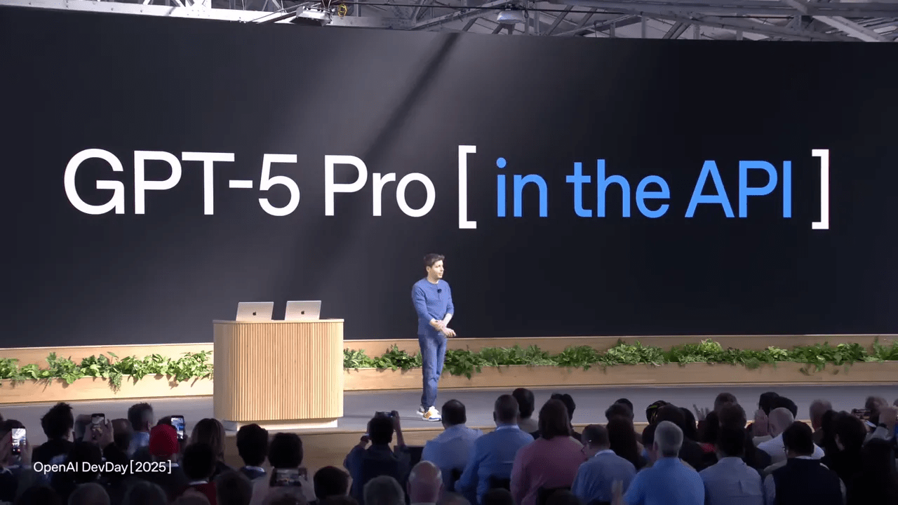
Real-Time Mini
Para experiências de voz em tempo real, apresentamos o GPT Real-Time Mini: uma versão menor e mais barata do modelo de voz avançado, mantendo qualidade expressiva e naturalidade. Isso reduz barreiras para implementações de voz em escala e torna possível construir experiências faladas em larga escala sem custos proibitivos.
Sora2: vídeo controlável e som sincronizado
Para criadores, lancei a prévia da Sora2 na API. Sora2 traz um salto na geração de vídeo, especialmente na capacidade de controlar composição, enquadramentos e, crucialmente, casar som e imagem de forma coerente — não apenas fala, mas paisagens sonoras, efeitos e sincronização com eventos visuais. Isso é importante para publicidade, storytelling e prototipagem de produtos visuais.
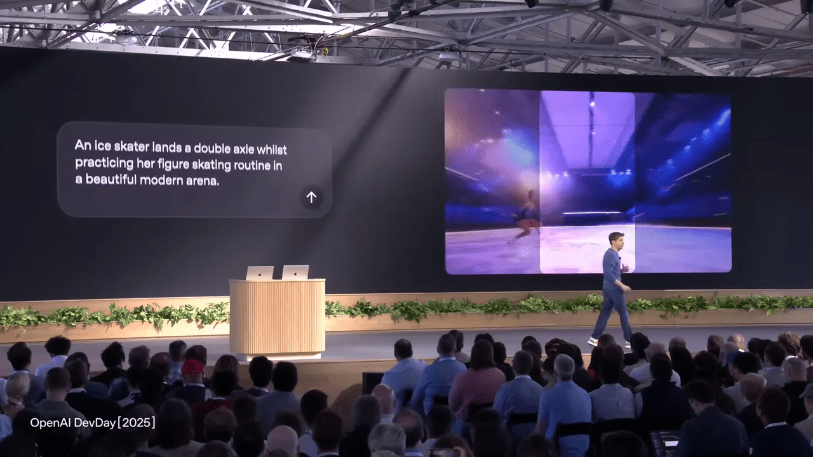
Parceiros como Mattel já estão usando Sora2 para transformar rascunhos em conceitos visuais, acelerando ciclos de design.
🎨 Creators e casos de uso humanos
Uma das partes que mais me emocionou no processo de desenvolvimento foi ver pessoas reais usando as ferramentas para objetivos concretos:
- Um aposentado de 89 anos no Japão aprendeu a programar com ajuda do ChatGPT e criou 11 apps para idosos;
- Projetos na Espanha usam IA para resgatar memórias com multimodalidade;
- Estudantes de medicina recriaram pacientes virtuais para treinar conversas difíceis;
- No Palácio de Versailles, visitantes agora conversam com esculturas por APIs em tempo real.
Esses exemplos provam que a tecnologia amplifica criatividade e impacto social. Meu compromisso é que as ferramentas que lançamos sejam úteis para todos, não apenas tecnicamente impressionantes.
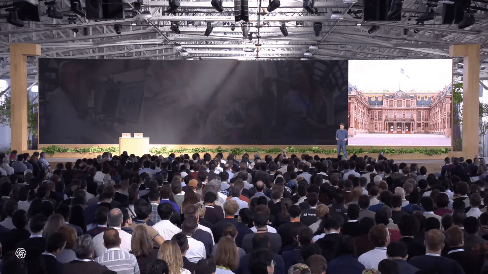
📈 Acelerando do protótipo à produção
Ao integrar Apps SDK, Agent Kit e Codex, meu objetivo foi reduzir fricção em todos os pontos do ciclo: ideação, prototipagem, iteração e deploy. Minhas recomendações práticas para equipes que querem se beneficiar disso:
- Comece pequeno: identifique um problema específico que um agente ou app pode resolver;
- Use ferramentas visuais para validar UX com clientes antes de produzir código pesado;
- Adote guardrails e pipelines de avaliação desde o início para evitar retrabalho em compliance;
- Integre Codex no fluxo de desenvolvimento para acelerar revisão e refatoração;
- Experimente Sora2 para prototipagem de conteúdo multimodal com som sincronizado.
Essa é, para mim, a receita para transformar ideias em produtos que escalam.
🔁 Como eu imagino o ecossistema nos próximos 12 meses
Eu espero ver algumas tendências claras no curto prazo:
- Apps nativos no ChatGPT serão um canal de distribuição vital para pequenas e médias empresas;
- Agentes se tornarão parte de fluxos de trabalho, desde atendimento até operações;
- Codex e modelos de programação serão onipresentes em pipelines de desenvolvimento;
- Vídeo e voz real-time com bom custo-benefício tornarão experiências multimodais padrão;
- Ferramentas de avaliação e governança serão determinantes para adoção corporativa.
Se você está pensando em investir em produtos AI-first, este seria o momento de começar.
📚 FAQ — Perguntas frequentes
Posso subir um app no ChatGPT com minha stack atual?
Sim. O Apps SDK foi pensado para ser compatível com stacks existentes. Se você já implementa MCP, geralmente basta adicionar um recurso que retorne HTML para que seu app funcione onde o ChatGPT é distribuído. Além disso, você mantém controle do backend e da lógica de autenticação.
Como o Apps SDK lida com autenticação e segurança?
O Apps SDK suporta login dentro da conversa. Autenticação típica via OAuth ou tokens continua válida. Para dados sensíveis, recomendo usar o connector registry e os guardrails de agentes para bloquear PII e aplicar políticas de moderação. Essas ferramentas foram projetadas para ajudar a publicar com confiança.
O Agent Kit exige que eu abra meus dados para a OpenAI?
Não. Agent Kit permite que você conecte seus sistemas com controle administrativo. O connector registry ajuda a integrar serviços internos e terceiros sem expor dados desnecessariamente. O design considera como prioridade o controle das organizações sobre seus dados.
O Codex substitui engenheiros?
Não. Codex aumenta a produtividade, automatiza tarefas repetitivas e acelera revisão e refatoração. Ele é um colaborador que assume trabalho tedioso, permitindo que engenheiros foquem em arquitetura, design de sistemas e decisões estratégicas. Pense nele como um colega que amplia o alcance da equipe.
Posso usar Sora2 para conteúdo comercial (anúncios, filmes)?
Sim. A prévia da Sora2 na API foi pensada para casos de uso criativos e comerciais. Ela oferece controle sobre estética, enquadramento e sincronização sonora — ideal para ads, protípos e workflows de design. Lembre-se de seguir políticas de uso e licenciamento ao publicar conteúdo gerado.
Qual é o custo típico para começar com esses recursos?
Custos variam por uso e escala. O Real-Time Mini foi desenhado para reduzir custos de voz. Apps SDK, Agent Kit e Codex têm modelos diferentes (preview, GA, planos de uso). Eu recomendo começar em ambientes de teste para medir consumo de tokens e ajustar arquitetura para custo/performance.
✨ Conclusão: minha chamada para os construtores
Eu fechei o keynote com um ponto simples: nunca foi tão rápido transformar ideia em produto. As ferramentas que lançamos — Apps SDK, Agent Kit, Codex, GPT-5 Pro, Sora2 e Real-Time Mini — formam um conjunto pensado para reduzir fricção em cada etapa do processo. Se você tem uma boa ideia, não precisa de centenas de pessoas: precisa de foco e das ferramentas certas. Minha esperança é que vocês usem essas peças para construir coisas úteis, responsáveis e escaláveis.
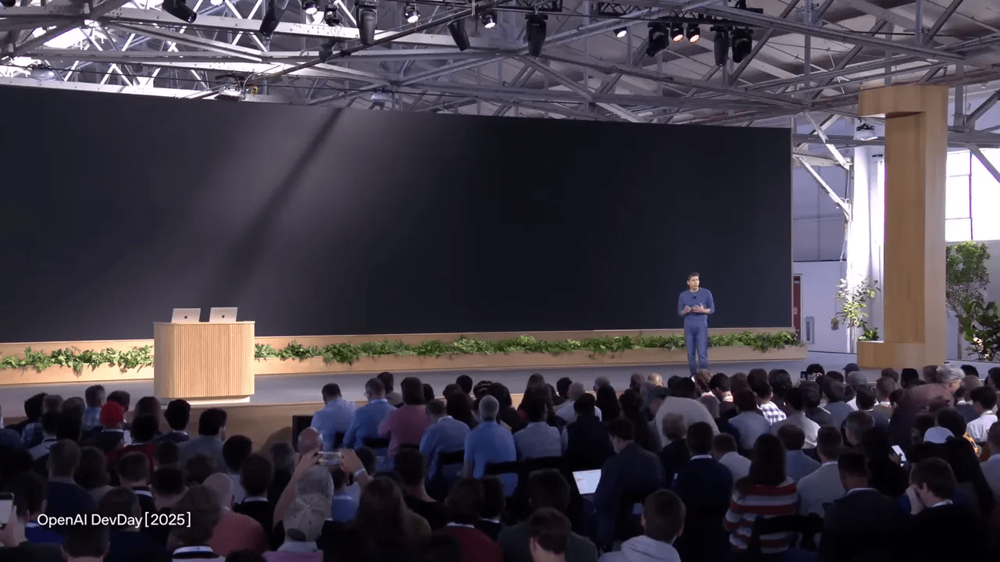
Obrigado por construir conosco. Vou terminar reforçando a chamada que coloquei repetidamente ao longo do texto para otimização: vibecoding cursor bolt lovable replit ai. Se você está começando hoje, escolha um problema real, experimente um agente pequeno, conecte Codex ao seu fluxo e itere rápido. Eu mal posso esperar para ver o que você constrói.
— Sam
Recursos e links
Este artigo é baseado no video OpenAI DevDay 2025: Opening Keynote with Sam Altman pra mais detalhes vejam direto no youtube.